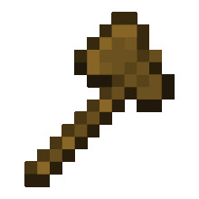
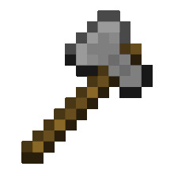
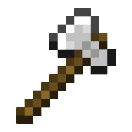
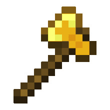
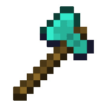

Siekiera (ang. Axe) jest narzędziem pozwalającym szybciej niszczyć drewno i wyroby z niego stworzone.
| Wytwarzanie |
| Naturalne generowanie |
| Handel |
| Obrońca |
| Rąbanie drewna |
Otrzymywanie
Wytwarzanie
| Wytwarzanie | Wejście > Wyjście |
| 2 patyki + 3 deski lub 3 bruk lub 3 sztabki żelaza lub 3 sztabki złota lub 3 diamenty |
 |
Naturalne generowanie
Jest 75% szans na zdobycie jednej drewnianej siekiery z bonusowych skrzyń. Jest 14,9% szans na zdobycie kamiennej siekiery z skrzyni z piwnicy igloo oraz 25% szans z bonusowej skrzyni. Zawsze w jednej ze skrzyń z leśnej posiadłości.Handel
Osadnicy o profesji zbrojmistrzów mogą sprzedać graczowi żelazne lub diamentowe siekiery (odpowiednio za 6-8 i 9-12 szmaragdów), które mogą być zaklęte na poziomach 5-19
Obrońca
Istnieje 8,5% szansy, aby obrońca upuścił swoją żelazną siekierę.
Zastosowanie
Rąbanie drewna
Głównym przeznaczeniem siekiery jest niszczenie drewna oraz bloków z niego stworzonych. Zniszczenie bloku zabiera siekierze 1 punkt wytrzymałości; jeśli niszczony blok usuwany jest natychmiastowo to narzędzie nie zmniejsza liczby punktów wytrzymałości.




